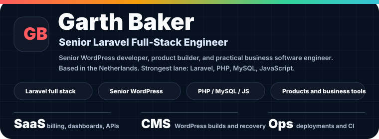
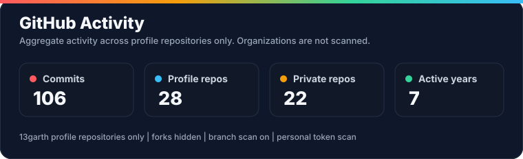
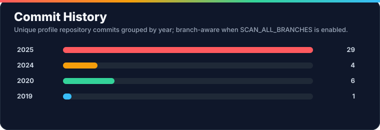
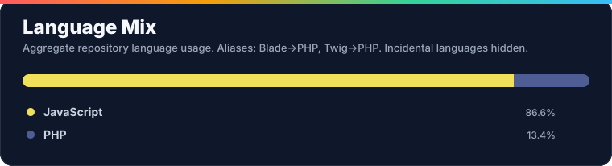

Portfolio
LinkedIn
Budget Kicker
CoverWeb
Stack Overflow
About
I am Garth Baker , a South African-born full stack software engineer based in the Netherlands.
My strongest lane is Laravel full-stack engineering : business systems, APIs, admin panels, reporting workflows, billing tools, deployments, and maintainable PHP/MySQL applications.
I am also a senior WordPress developer . WordPress is not my main product focus, but I can use it deeply when it is the right tool: custom builds, theme and plugin work, migrations, troubleshooting, performance fixes, hosting handovers, and client-ready delivery.
I have been building professionally since 2016 , with a practical range that covers discovery, wireframes, responsive UI, backend integration, deployment, documentation, and handover.
I like building practical software that earns trust because it solves real operational problems.
Engineering Focus
Laravel Full Stack
Laravel apps, APIs, queues, jobs, auth, billing, reports
MySQL/MariaDB data modeling and query work
Admin dashboards and internal operations tools
Deployment workflows, GitHub Actions, VPS/shared hosting
Senior WordPress
Custom themes, plugins, templates, and admin workflows
WooCommerce and content-heavy business websites
Migration, recovery, hosting, speed, and maintenance work
Practical client delivery without overengineering
Product Builder
SaaS-style tools and paid product ideas
Billing, invoicing, budgeting, and customer workflows
Reusable utilities that reduce repeated development work
Learning Edge
C#, ASP.NET, and Blazor
Flutter and Dart when mobile makes sense
Careful AI-assisted development with real understanding
Stack
Core
PHP Laravel MySQL MariaDB JavaScript jQuery Vue.js HTML5 CSS Bootstrap
WordPress
Senior WordPress WooCommerce Custom plugins Custom themes Migrations
Platforms, Tools & Expanding Range
REST APIs Postman GitHub Actions Docker AWS Linux Apache IIS Flutter Dart C# ASP.NET Blazor Figma
Featured Work
Budget Kicker Personal finance and business billing product thinking: recurring costs, shared expenses, customer invoices, templates, and reporting. CoverWeb Hosting, domains, customer workflow, and business operations brought together under a practical software/hosting brand. Portfolio / CV Public professional profile showing experience, technical range, and project direction. Detailed CV Longer-form public CV with work history, project examples, skill breakdowns, and problem-solving notes. API Status Checker Local URL/API/domain health checking utility for fast operational checks.
Public CV Signals
Professional experience Full stack development from 2016 onward across Laravel, PHP, WordPress, responsive UI, Flutter, AWS, and client delivery.
End-to-end delivery Comfortable moving from requirements and wireframes through frontend, backend, deployment, documentation, support, and handover.
Community footprint Public Stack Overflow history across PHP, CSS, JavaScript, HTML, WordPress, and Laravel topics.
Builder mindset Product ideas, reusable developer utilities, business workflow tools, and practical automation.
Current Direction
Build strong Laravel products with practical business value.
Keep WordPress as a senior delivery skill for the projects where it wins.
Turn repeated client/business workflows into reusable systems.
Improve deployment, automation, billing, reporting, and API integration patterns.
Grow C#, ASP.NET, and Blazor skill while keeping Laravel as the main strength.
How I Work
Business value Start with the operational problem and the user workflow.
Architecture Keep the first version understandable, then refactor toward clearer boundaries.
UI Build interfaces that make decisions and next actions obvious.
APIs Keep integrations predictable, testable, and documented enough to hand over.
WordPress Use it pragmatically: fast delivery, clean customization, stable ownership.
Maintenance Prefer code that future me, teammates, or clients can understand.
GitHub Stats



The cards scan repositories under my GitHub profile. Organizations are not scanned, and repository source code is never written into the page.